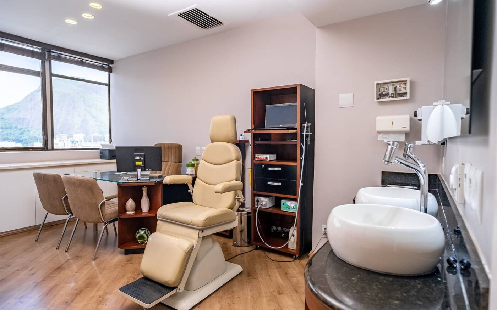
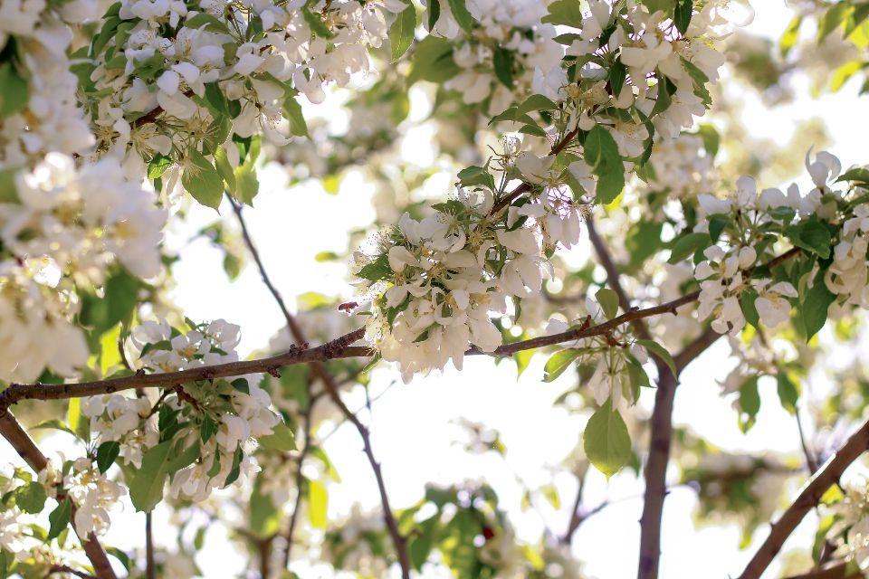
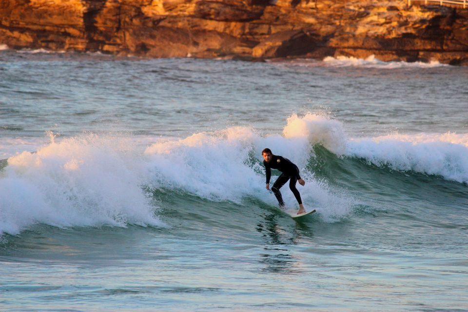
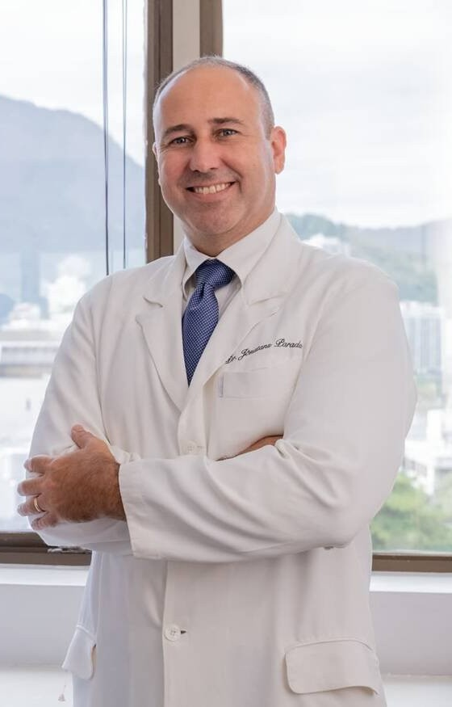

“Não tem como falar de saúde integral sem falar de respiração.”
Medicina de precisão: o tratamento certo para a causa certa.
Dr. Jônatans Parada · Otorrinolaringologista
Respiração
A forma como você respira influencia a forma como você vive.
Respirar é muito mais do que levar ar aos pulmões. A qualidade da respiração influencia o sono, a disposição, o desenvolvimento infantil, o desempenho físico e até a forma como nosso cérebro responde ao estresse e regula a atenção e as emoções.

01
Nariz & Sinusite
Nem todo nariz entupido tem a mesma causa.
Desvio de septo, cornetos, pólipos, sinusite que volta. Avaliação com endoscopia nasal e, quando bem indicada, cirurgia endoscópica.
Obstrução nasal
Sinusite
Desvio de septo
Endoscopia
02
Sono & Respiração
Roncar pode ser mais do que um incômodo.
Ronco, pausas na respiração e o cansaço de quem dorme e acorda sem descansar. Investigar o caminho do ar é o primeiro passo.
Ronco
Apneia do sono
Sono que não descansa

03
Alergia & Rinite
Controlar a rinite é entender o que mantém a inflamação.
Espirros, coriza e nariz que entope todo dia. Teste de alergia e vacina para rinite, quando indicados, com acompanhamento de longo prazo.
Rinite alérgica
Teste de alergia
Vacina

04
Respiração & Performance
Performance começa na respiração.
Corrida, surfe, bike, musculação, yoga. Nenhum treino compensa um nariz que não deixa o ar passar. E quem dorme melhor, treina melhor.
Corrida
Surfe
Bike
Recuperação
05
Respiração na Infância
Seu filho vive de boca aberta?
Respiração pela boca, ronco e sono agitado merecem investigação. Respirar bem também faz parte de crescer bem.
Respiração oral
Ronco infantil
Adenoide e amígdalas
06
Neurociência da Respiração
A respiração conversa com o cérebro.
O jeito de respirar influencia o sistema nervoso, o estresse, o foco e o sono. Técnicas de respiração orientadas com critério, separando o que tem evidência do que é moda.
Sistema nervoso
Estresse e ansiedade
Foco
Respiração nasal
Outros tratamentos
Além da respiração, o cuidado inteiro.
Ouvido, equilíbrio e voz também fazem parte da otorrinolaringologia, sempre explicados em linguagem de gente.
Ouvido & Audição
Ouvir bem é estar presente.
Cera, otite, zumbido e perda auditiva, investigados com cuidado e com o tratamento adequado a cada caso.
Tontura & Equilíbrio
Nem toda tontura é labirintite.
Vertigem, cristais do ouvido (VPPB) e desequilíbrio. Entender a origem muda o tratamento.
Voz & Garganta
Rouquidão que não passa merece avaliação.
Pigarro, refluxo e cansaço vocal de quem fala o dia inteiro: professores, gestores, profissionais da voz.
Cirurgias
Quando a cirurgia é o caminho, ela é feita com precisão e segurança.
Estas são as cirurgias que realizo. Todas começam por uma avaliação: indico só quando é o melhor para o seu caso, e explico antes cada etapa, o preparo e a recuperação.
Nariz & seios da face
4 cirurgias
Septoplastia
Correção do desvio de septo
Para quem vive com o nariz entupido por causa de um desvio na parede que divide as narinas. A correção é feita por dentro do nariz.
Para quem tem o nariz entupido por cornetos aumentados que não melhoram com o tratamento clínico, muitas vezes junto com rinite. Reduz o volume dos cornetos e abre a passagem do ar, preservando a função do nariz. Feita por dentro do nariz, muitas vezes junto com a septoplastia.
Sobre a sua rotina: sono, ronco, rinite, treino, cansaço ao acordar. Pergunto de tudo, porque está tudo ligado ao caminho do ar.
02
Exame
Nariz, seios da face e garganta, com endoscopia nasal no consultório quando indicada.
03
A causa, explicada
Você entende o que trava a sua respiração, em palavras simples e sem pressa.
04
O plano indicado
Tratamento clínico, controle da alergia, mudança de hábito ou cirurgia. Só o que for bem indicado para você.

Dr. Jônatans ParadaOtorrinolaringologia · CRM 52791547 · RQE 15197
Sobre mim
Precisão de cirurgião, calma de quem escuta.
Investigo a causa antes de indicar o tratamento, explico com clareza e acompanho de perto. E sei a hora de não operar.
2009
Otorrinolaringologista desde então. Formação na UNIRIO e residência no HCE.
Endoscopia
Cirurgia endoscópica do nariz e dos seios da face no dia a dia.
Ensino
Ensino residentes no Hospital Central da Aeronáutica e participei da primeira cirurgia robótica em otorrino da Aeronáutica, no Hospital de Força Aérea do Galeão.
O consultório
Em Ipanema, com vista para respirar.
Equipamentos modernos para a consulta e os exames no mesmo lugar, num espaço calmo no coração de Ipanema.
Teste de alergia e vacina para rinite, quando indicados
Plano de tratamento por escrito
Atendimento particular no consultório em Ipanema
Atendimento particular. Pergunte pelo WhatsApp como funciona o pedido de reembolso ao seu plano.
Perguntas frequentes
Antes de agendar.
Quais cirurgias você realiza?+
Septoplastia (desvio de septo), turbinoplastia (cornetos nasais), cirurgia endoscópica nasossinusal (sinusite e pólipos), dacriocistorrinostomia (canal lacrimal), adenoidectomia, amigdalectomia, faringoplastia (ronco), microcirurgia de laringe (pregas vocais) e timpanotomia para tubo de ventilação. Veja os detalhes de cada uma.
Vou ter que operar?+
Não necessariamente. O caminho pode ser clínico, de hábitos, vacina para alergia ou cirurgia. A cirurgia só entra quando é bem indicada para o seu caso.
Meu filho respira pela boca e ronca. Serve para ele?+
Serve. A avaliação investiga por que a criança vive de boca aberta, ronca ou dorme mal.
Não sou atleta. A avaliação é para mim?+
É. Quem treina recebe atenção ao impacto no esporte, mas a investigação vale para qualquer pessoa que respira ou dorme mal.
Também atende ouvido, tontura e voz?+
Sim. Além da respiração, atendo as demais áreas da otorrinolaringologia: ouvido e audição, tontura e equilíbrio, voz e garganta.
Quanto custa?+
O valor da avaliação é passado pelo WhatsApp. O custo de um tratamento depende do que for indicado, e conversamos sobre cada caminho na consulta.
É pelo plano de saúde?+
A avaliação é particular. Pergunte pelo WhatsApp como funciona o pedido de reembolso ao seu plano.